2.007 Robot Design
Spring 2026 · MIT 2.007 Design and Manufacturing I
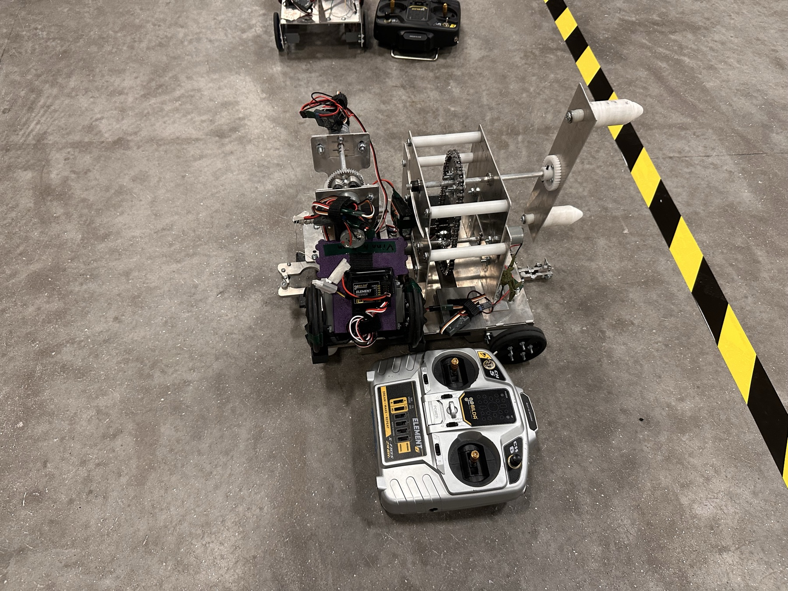
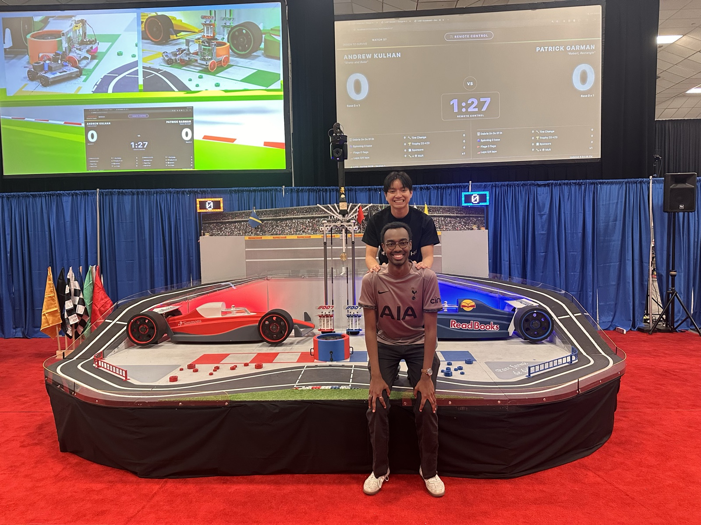
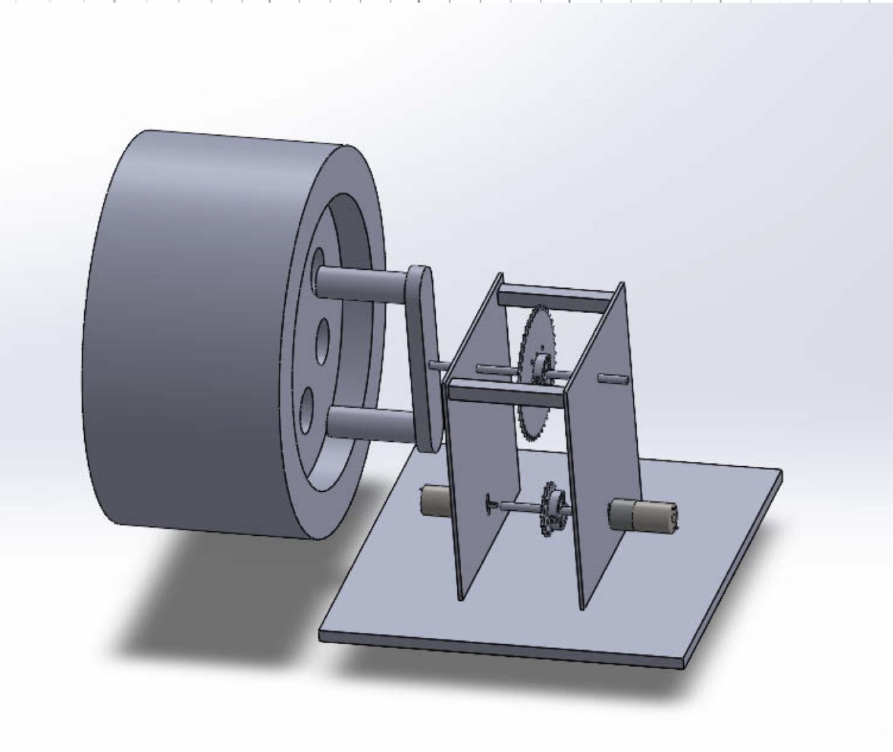
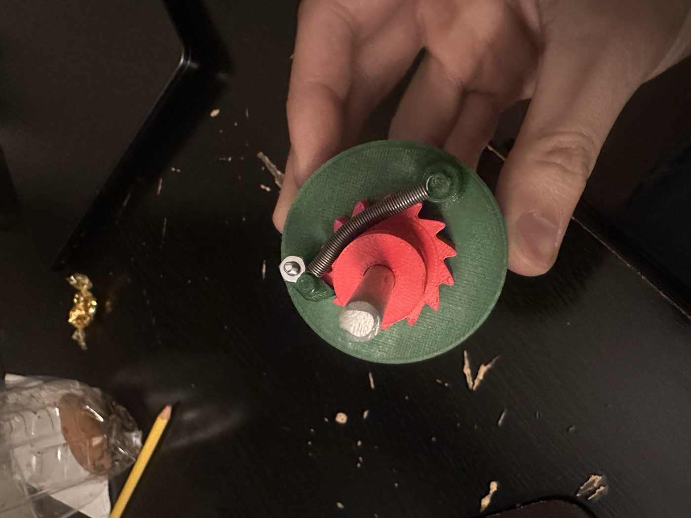

Summary: Designed and built a robot from scratch for “F.007: Design to Survive,” the 2.007 Design and Manufacturing I competition, a Formula 1 themed game where two robots compete head-to-head on a shared race-themed table. This page follows the project from first concepts and hand calculations through prototyping, fabrication and testing, to a 704–675 match win.
Skills
- Mechanism design: chain and sprocket transmission, gearing, winch-driven lift
- Sheet-metal fabrication and assembly
- Embedded electronics: motors, servos, battery, microcontroller, radio control
- Iterative prototyping and testing
The story
Concept on paper. Before any metal was cut, I mapped the game's scoring actions against how hard each would be to build, to find a strategy that scored well without betting everything on the hardest mechanisms. Then I sketched the spin-wheel module by hand — bearings, spacers, sprockets and motor mounts — to work out how the pieces would stack on a shaft.
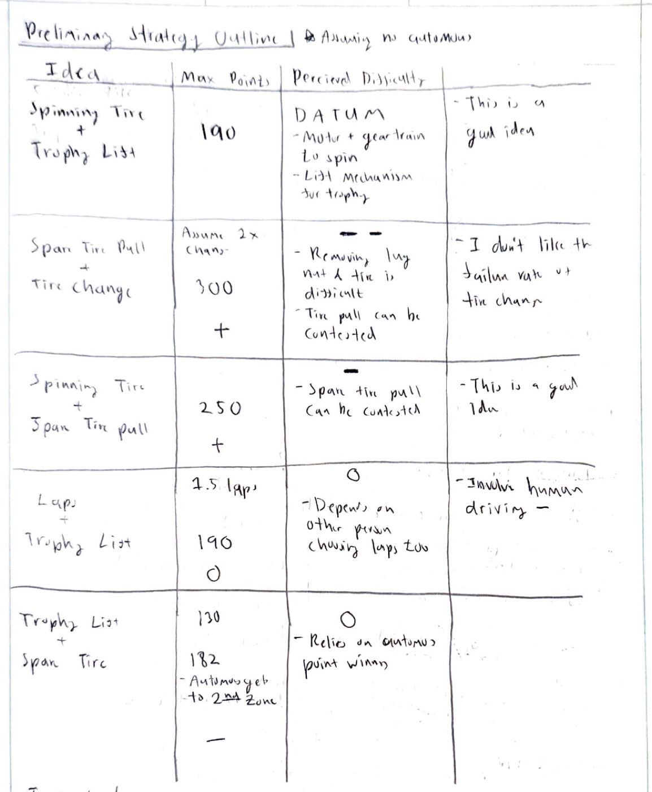
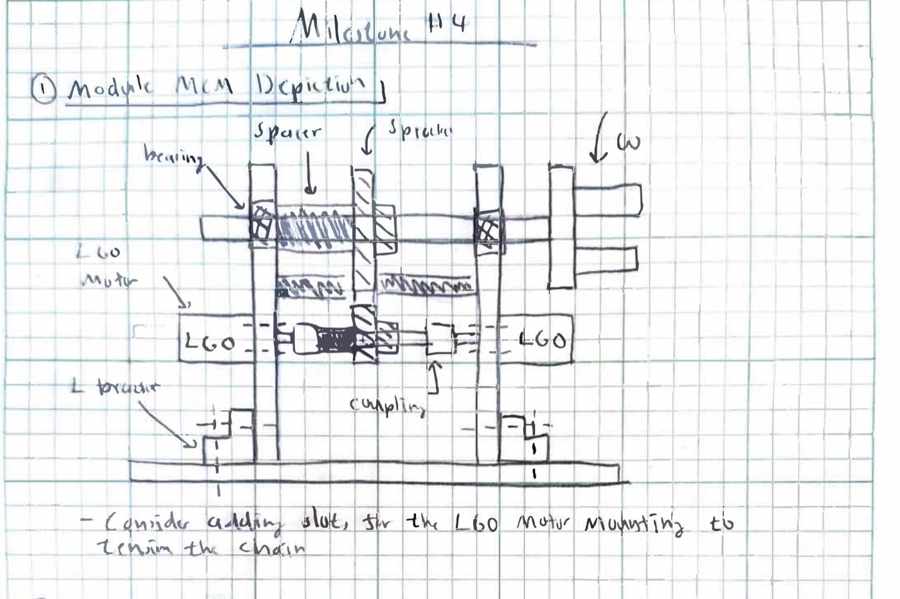
Preliminary strategy outline (left) and the first hand sketch of the spin-wheel module (right).
Side build: mini bot prototypes. Alongside the main robot, I also started a small companion robot as its own side project. It began as a simple test chassis to work out the drive layout, then moved to a labeled prototype on a folded sheet-metal body, and was eventually redesigned around a compact 3D-printed chassis that paired with the main robot at competition.


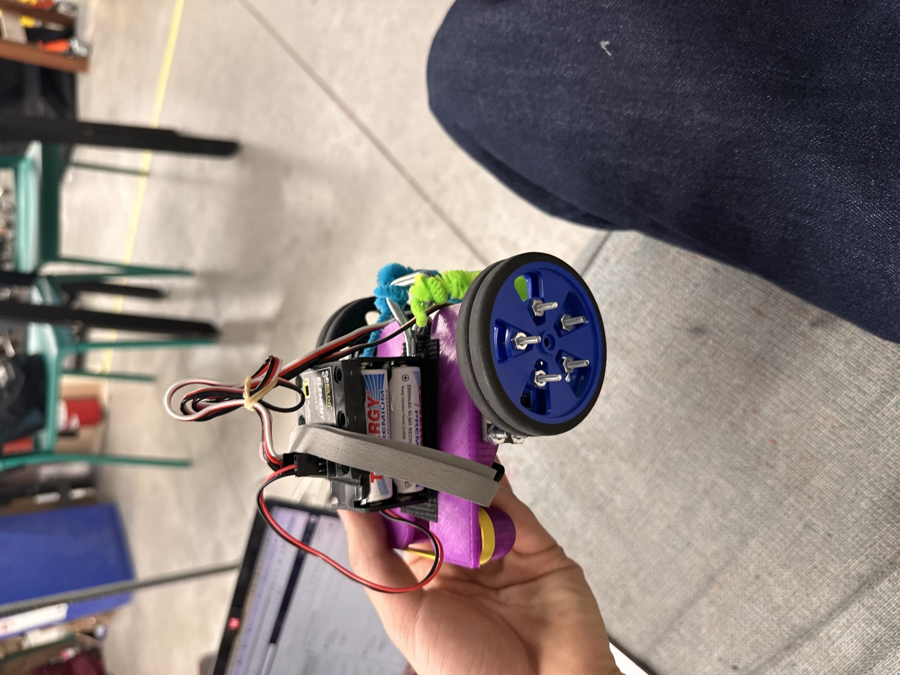
The mini bot's journey: first test chassis, labeled prototype, and the final compact, 3D-printed version.
Building the robot. The final chassis uses sheet-metal side walls and a base, cut, bent and fastened together, carrying a microcontroller, battery and radio receiver wired to the drive motors and servos.


Sheet-metal parts during fabrication (left) and the robot mid-assembly (right).

Top view of the electronics and drivetrain.
The spinner. One scoring action spins a wheel on the table: two motors drive a 1:2 gear ratio transmission through a sprocket and chain, turning a Delrin wheel insert. I modeled it in CAD, then built it.
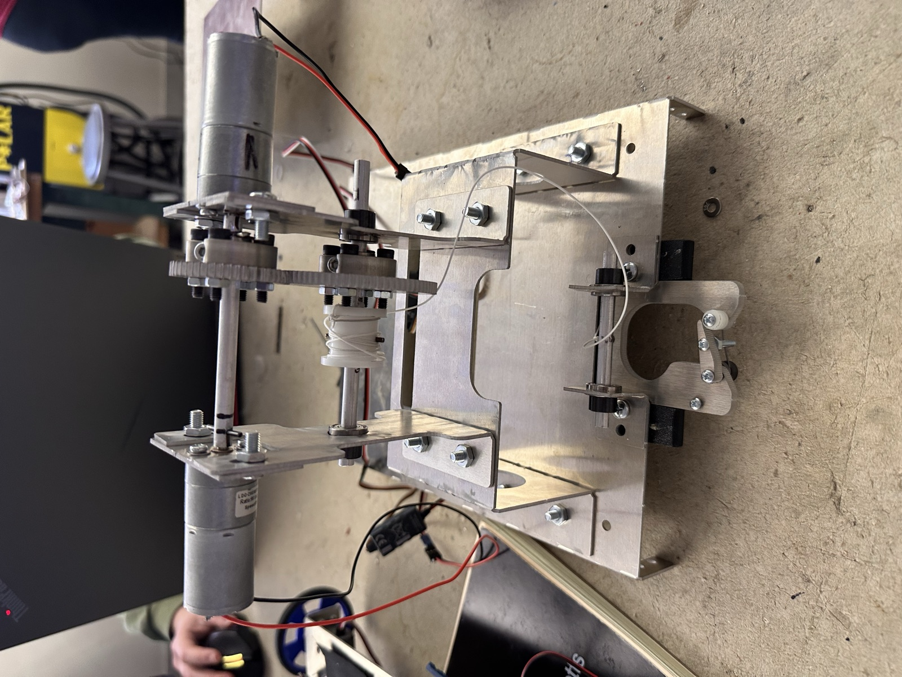
The CAD model (left) and the built spinner mechanism (right).
Spinning the wheel on the table:
The winch. A second scoring action pulls a tire in with a carabiner, winched back by a separate geared motor pair, sized to output at least 3 N·m of torque.
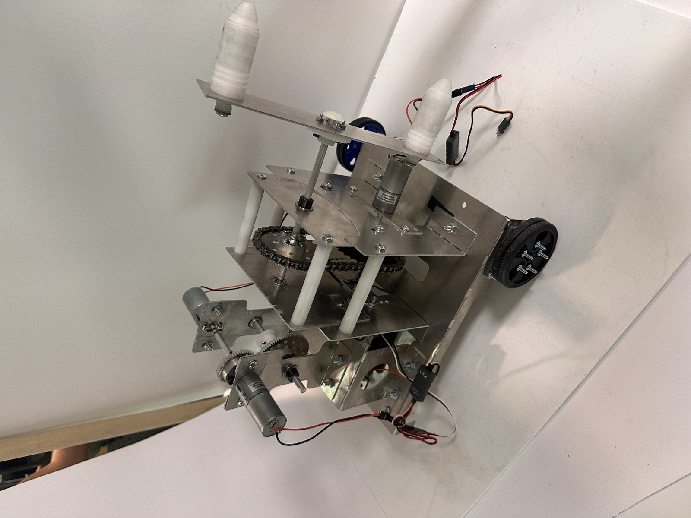
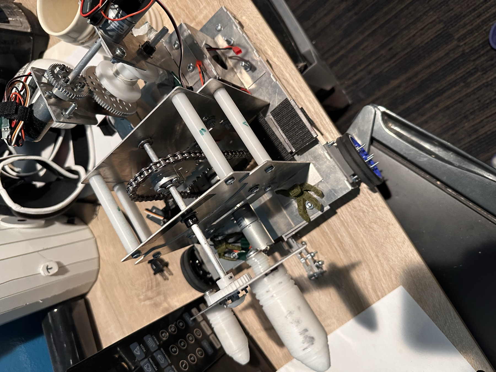
The winch mechanism (left), and a closer look while testing (right).
Being tested and adjusted on the table before a run:
Attachment iteration. I built several small carabiner-style bracket plates with fasteners and a latch element, and tested them against the rails and the wheel on the competition table, iterating between versions.


Bracket prototypes, from the first version to later iterations.
An idea that didn't work: ratchet and pawl. Early on, I prototyped a 3D-printed ratchet-and-pawl mechanism, meant to let the winch hold tension and lock in one direction without the motor fighting the load. It was a good idea on paper, but in practice the pawl didn't catch reliably under load, so I dropped it in favor of the simpler geared winch above. It's still one of the more important parts of the process — it's the iteration that told me what wouldn't work.
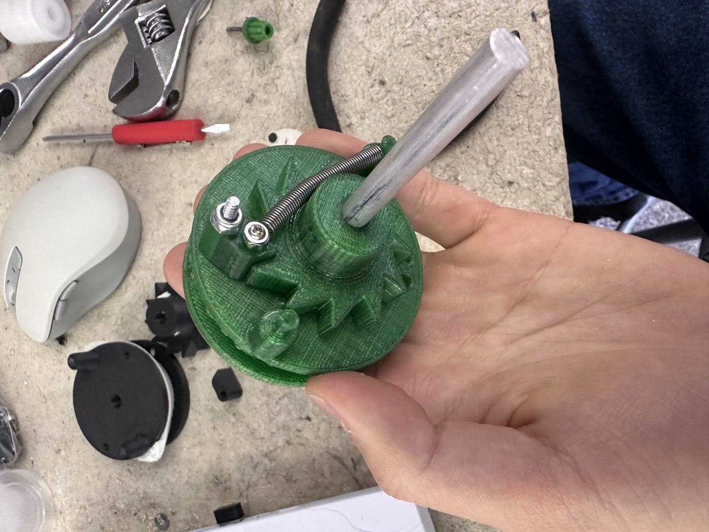
The 3D-printed ratchet-and-pawl prototype that didn't make it onto the final robot.
The final design review. Partway through the build, I put together a full design review: the point strategy, the motor and gearing calculations for each mechanism, the hard design requirements, and the carabiner and spin-wheel iterations. Click through it below.
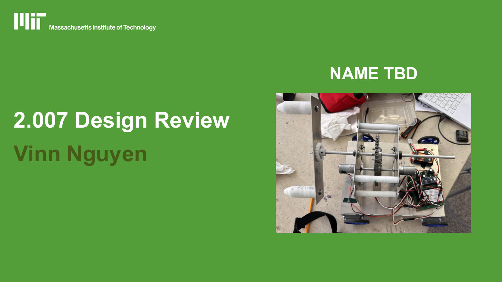
Competition rules and scoring. The game, “F.007: Design to Survive,” scores points through the racetrack and road debris, a spinning-tire bonus, tire changes, a spare-tire pull multiplier, a champagne-bottle multiplier, and the trophy lift.
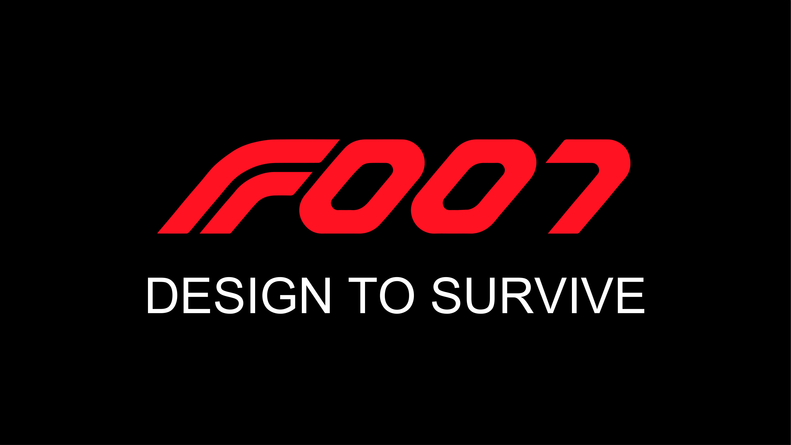
Competition day. The robot ran on the F.007 table against another team's robot.
The competition table (left), and me with my partner at the track (right).
The result. The robot won its match, 704–675. This is the moment I'm proudest of on this project:
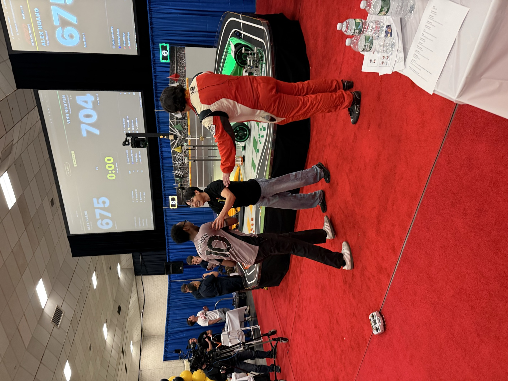
Celebrating the win.